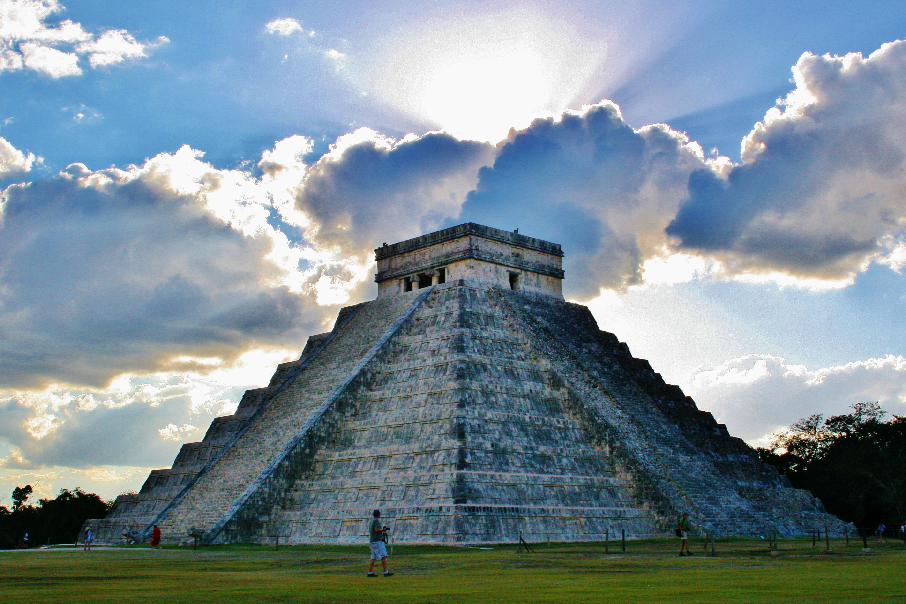

×

Mexico
Традиционная еда
Такос или тако — Это любимое многими мексиканскими мужчинами блюдо готовится из говяжьего фарша, томатов, красной фасоли и ветчины. Горячую, сочную начинку заворачивают в теплые тортильи и едят с соусом табаско.
Кесадилья — это очень вкусное блюдо из тортильяс с фаршем из говядины, курятины или свинины, фасоли, кукурузы и твердого сыра. Непременным составляющим является острый перец чили. Начинку выкладывают на лепешки посыпанные тертым сыром и обжаривают тортильи с двух сторон.
Фахитос — В состав популярного национального блюда Мексики фахитос входят мясо говядины, соус чили, сладкий перец, чеснок, лук и пшеничные лепешки. Пикантный вкус этого блюда обусловлен наличием в нем меда. Горячее мясо подают либо на лепешке, либо на листьях салата или капусты.
Энчилада — Невероятно вкусное блюдо энчилада готовится из мясного фарша, грибов, твердого сыра, овощей и тортильяс. Разнообразные приправы добавляются в большом количестве. Рулеты с начинкой запекают в остром томатном соусе с сыром. Подают блюдо горячим.
____